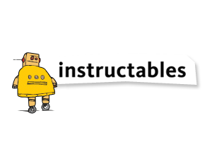

Pilihlah dan identifikasi beberapa website ataupun web app (lebih dari satu) yang kamu sukai. Kalau bisa selain social media yang populer |
 www.freepik.com www.freepik.com www.instructables.com |
|
Mengapa website tersebut kamu pilih? |
1. www.instructables.com/ web yang berisi berupa inspirasi-inspirasi hal unik berupa intruksi-intruksi berupa eksperimen untuk membuat berbagai hal, bagaimana cara membuat sepatu, tas meja dll, lengkap deh dan bisa dipraktekan dirumah seperti dibidang tehnology, membuat alarm, lampu dll.
|
|
Bagian mana pada website tersebut yang paling menarik dan paling penting? |
1. www.freepik.com - paling menarik ketika kita meilhat berbagai desain menarik, seperti kita mau mencari icon, maka disitu akan terlihat semua icon sesuai dengan selera kita.
|
|
Deskripsikan website tersebut secara visual, dengan minimal 5 sifat. |
1. www.freepik.com : cantik, Menarik, elegan,lucu, pintar
|
|
Deskripsikan sifat konten, fokus, atau tujuan website tersebut, dengan minimal 5 sifat. |
1. www.freepik.com | website sangat seru, menarik, inspiratif, baik, indah
|
|
Seberapa mudah kamu dapat menemukan hal yang kamu cari dari halaman utama? Bagaimana jika dari halaman lain? |
Kedua website tersebut sangat mudah untuk berselancar, dimana menu search ataupun menu lainnya sudah tersedia dihalaman awal, sangat mudah sekali untuk menggali seluruh konten, informasinya lengkap dengan icon yang sudah familiar dan mudah untuk dipahami. |
|
Apa yang kamu rasakan setelah berada di website tersebut? |
senang, juga membuat kita jadi smart, kreatif dan menambah ide ide, |
|
Jika website tersebut menjual sesuatu, apakah kamu pernah membeli sesuatu yang di jual di sana? Mengapa dan mengapa tidak? |
1. www.freepik.com -> Menjual hasil karya design, saya sendiri belum pernah membeli design-design tersebut karna belum dibutuhkan untuk pekerjaan saya.
|
|